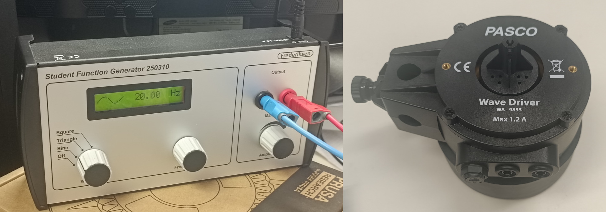

Uvod
Pri predmetu Projektno delo 1 nam je bila zastavljena naloga Špagetolom. Naša naloga je bila raziskati, od katerih relevantnih parametrov je odvisna največja sila, s katero moramo delovati na snop špagetov v prečni smeri, da ga zlomimo. Po začetnem premisleku smo se odločili, da bomo raziskali vpliv:
- debeline špagetov,
- razdalje med podporama, na katerih so špageti postavljeni,
- števila špagetov v snopu,
- ponavljajočega upogibanja in
- namakanja v vodi.
Večino poskusov smo izvedli na špagetih znamke Barilla, ker smo en paket teh že imeli. Delali smo s špageti treh različnih debelin: N°1 (fotografija ), N°3 in N°5. Špageti debeline N°1 in N°5 so bili sveži, špageti debeline N°3 pa so bili stari že več kot desetletje. Predvidevali smo, da to nima velikega vpliva na rezultate in tega tudi nismo opazili.

Za vse meritve smo uporabili isti digitalni silomer podjetja Vernier, ki ima dve nastavitvi za ločljivost. Večinoma smo uporabljali natančnejšo nastavitev, pri snopih, kjer je merjena sila šla nad 10 N, pa smo uporabljali manj natančno nastavitev.
Večino meritev smo izvedli s posameznimi špageti, ker domnevamo, da lahko spoznanja o posameznih špagetih prenesemo na snope.
Vpliv razdalje med podporama in debeline špagetov na lomilno silo
Za namene raziskovanja smo s 3D tiskalnikom natisnili posebni podpori (fotografija ), ki sta nam omogočali enostavno fiksiranje špagetov različnih debelin na konstantnih razdaljah. Da se podpori nista premikali, smo jih med merjenjem z lepilnim trakom prilepili na površino in utežili.

S silomerom smo na špaget delovali s silo na sredini med podporama, dokler se špaget ni zlomil (fotografija ). Tako smo izmerili največjo silo, ki je potrebna, da se špaget zlomi (lomilno silo).

Najprej nas je zanimalo, kako debelina špageta vpliva na silo, potrebno, da se špaget zlomi. Zato smo najprej na razdalji 20 cm testirali 3 različne debeline (N°1, N°3 in N°5). Opazili smo, da se tanjši špageti (N°1) zlomijo pri nižjih silah kot debelejši špageti in se tudi bolj upognejo pred zlomom. Debelejši špageti pa so se zdeli bolj togi in so pred zlomom zdržali večje obremenitve.
Iz meritev (graf ) je razvidno, da lomilna sila narašča z debelino špageta. To pojasnimo z vztrajnostnim momentom ploskve (\(I\)), ki določa odpornost telesa proti upogibu. Za špaget z okroglim prerezom in polmerom \(r\) velja enačba \[ I = \frac 1 4 π r^4. \] Ker je vztrajnostni moment ploskve sorazmeren s četrto potenco polmera (\(I \propto r^4\)), bi teoretično pričakovali, da bo odvisnost sile od debeline opisana s potenčno funkcijo. Linearen trend v naših meritvah je mogoče posledica majhnega razpona debelin vzorcev, kjer se krivulja potenčne funkcije lahko lokalno približa premici.
Poskus smo nato nadaljevali z enako debelino špagetov (1,169 mm) pri različnih razdaljah med podporama \(L\) (20 cm; 7,5 cm; 6 cm; 5 cm; 4 cm). Zanimalo nas je, kako razdalja vpliva na silo, ki je potrebna, da se špaget zlomi.
Definicija lomne napetosti:
Lomna napetost je fizikalna količina, ki predstavlja največjo notranjo napetost v materialu tik pred lomom. Pri upogibu špageta se spodnja stran razteza, zgornja pa krči; špaget poči na mestu, kjer natezne napetosti na površini presežejo kritično vrednost. Teoretično je \(\sigma\) materialna konstanta, odvisna od strukture (poroznosti) proizvodnih procesov in temperature.
Teorija:
Povezava med silo \(F\), razdaljo med podporama \(L\) in lastnostmi špageta poda enačba za lomno napetost. Poenostavljeno jo zapišemo kot: \[ \sigma = \frac{FL}{\pi r^2} \] Iz tega sledi, da je lomilna sila obratno sorazmerna z razdaljo \(L\): \[ F = \frac{\sigma \pi r^2}{L} \] Ker sta \(\sigma\) in \(r\) za določen vzorec konstantna, pričakujemo, da se bo sila zmanjševala z večanjem razdalje med podporama \(F \propto \frac 1 L\).
Opažanja:
Opazili smo, da pri krajših razdaljah za zlom potrebujemo večjo silo, špaget pa se pred zlomom minimalno ukrivi. Pri največji razdalji (20 cm) pa se je špaget zlomil že pri zelo majhni obremenitvi.
Iz meritev na Grafu je razvidno, da lomilna sila pada z razdaljo \(L\), kar se sklada z \(F \propto \frac 1 L\). Črtkana krivulja predstavlja potenčni fit, ki sledi trendu upadanja.
Opazimo, da krivulja ne poteka skozi vsa območja merilnih negotovosti. To pripisujemo nehomogenosti materiala; špageti lahko vsebujejo mikroskopske zračne pore ali razpoke, ki nastanejo med sušenjem. Če se taka napaka nahaja na sredini špageta, se ta zlomi pri nižji sili, kot bi predvidevali po teoriji. Pri zelo majhnih razdaljah pa k lomu lahko prispevajo tudi strižne sile, česar osnovna enačba za upogib ne upošteva.
V naslednjem koraku smo se osredotočili na izračunane vrednosti napetosti, ki smo jo definirali v prejšnjem poglavju. Čeprav bi morala biti lomna napetost kot materialna lastnost teoretično konstantna in neodvisna od geometrije vzorca, smo želeli preveriti, kako na njeno izračunano vrednost vplivata debelina špageta in razdalja med podporama v realnih pogojih.
Pri meritvah vpliva debeline \(d\) smo opazovali špagete treh različnih debelin (1,169 mm; 1,413 mm; 1,817 mm). Izračunane lomne napetosti \(\sigma\) se gibljejo v območju od 174 MPa do 196 MPa. Na grafu lahko opazimo, da se lomna napetost z večanjem debeline rahlo manjša. Teoretično bi morala biti lomna napetost neodvisna od debeline, v praksi pa lahko pride do rahlih nihanj vrednosti \(\sigma\), zaradi nehomogenosti materiala (majhne razpoke, zračni mehurčki ipd.). K napaki prispeva tudi majhno število meritev. Na grafu tudi premica ne gre skozi območja napak vseh točk ravno zaradi teh možnih napak.
Pri meritvah vpliva razdalje \(L\) (graf ) smo uporabil špagete debeline \(d = \) 1,169 mm. Izmerjene napetosti se gibljejo med 134 MPa in 185 MPa. Na grafu lahko opazimo, da se lomna napetost s povečevanjem razdalje rahlo dviga. Pri majhnih razdaljah k lomu prispeva strižna napetost, pri večjih razdaljah pa prevladujejo čiste upogibne napetosti. Špaget se pri večjih razdaljah obnaša bolj prožno, naša enačba za izračun napetosti \[ \sigma = \frac{8FL}{\pi d^3} \] pa je najbolj natančna prav v območju čistega upogiba.
Poves pred zlomom
Med meritvami vpliva debeline \(d\) in razdalje \(L\) na silo, ki je potrebna, da špaget zlomimo, smo zraven opazovali tudi poves špageta (navpični odmik sredine tik pred lomom). To smo storili tako, da smo vsako meritev posneli in nato s posnetka razbrali „višino“ raztezka oz. poves.
Opazili smo, da se špaget pri majhnih razdaljah manj povesi kot pa pri večjih razdaljah. Prav tako smo opazili, da se debelejši špaget manj povesi kot tanjši.
Z grafov in je razvidno, da na poves vpliva tako debelina kot tudi razdalja med podporama. Z večanjem debeline se ukrivljenost zmanjšuje, z večanjem razdalje pa se ukrivljenost povečuje. Tako smo ugotovili, da je špaget najbolj elastičen, ko je tanek in dolg. Nasprotno pa so kratki in debeli špageti bolj togi in se zlomijo že pri minimalnem povesu.
Kot smo že prej ugotovili, daljši kot je špaget, večji je navor in tako že majhna sila povzroči deformacijo. In debelejši kot je špaget, večji je vztrajnostni moment ploskve in težje pride do deformacije/upogiba.
Pri grafu , ki prikazuje odvisnost povesa od debeline špageta, smo uporabili potenčno funkcijo.
Razlaga:
Material se zlomi, ko mehanska deformacija na zunanji površini doseže kritično mejo. Površinska deformacija je pri povesu povezana z debelino špageta in ukrivljenostjo z enačbo \[\epsilon = \frac 1 2 kd.\] Iz tega sledi, da je ukrivljenost ob lomu obratno sorazmerna z debelino: \(k = \frac{2\epsilon}{d}\).
Ker je poves neposredno povezan z ukrivljenostjo palice, pričakujemo, da bodo tanjši špageti zdržali večje ukrivitve in s tem večje povese pred lomom kot debelejši špageti. Debelejši špageti dosežejo kritično deformacijo \(\epsilon\) že pri zelo majhnem povesu, saj se zaradi večjega polmera zunanje plasti materiala raztegnejo hitreje. Naše meritve potrjujejo to potenčno odvisnost.
Pri grafu , ki prikazuje odvisnost povesa od razdalje med podporama, nismo uporabili funkcije fita, saj imamo na voljo le dve meritvi. Narisana trendna črta med dvema točkama ne bi mogla zanesljivo potrditi teoretičnega modela. Kljub temu pa podatki nakazujejo na naraščanje povesa z dolžino, kar predvideva tudi teorija o upogibu nosilca, kjer poves narašča s tretjo potenco dolžine: \[ \mathrm{upogib} = \frac{FL^3}{48EI} \] V zgornji enačbi \(E\) predstavlja Youngov modul elastičnosti materiala, \(I\) pa vztrajnostni moment ploskve. Za potrditev te potenčne odvisnosti bi v prihodnje potrebovali meritve pri več različnih razdaljah \(L\).
Vpliv števila špagetov v snopu na lomilno silo
V tem delu poskusa smo raziskovali, kako je največja sila, potrebna za zlom snopa špagetov, odvisna od števila špagetov v snopu. Pri vseh glavnih meritvah smo ohranili enako razdaljo med podporama
\[L = 11{,}5\, \mathrm{cm},\]spreminjali pa smo število špagetov v snopu. Neodvisna spremenljivka je bila torej število špagetov \(n\), odvisna spremenljivka pa lomilna sila \(F_{\mathrm{lom}}\). Snop smo obremenjevali v prečni smeri, dokler ni prišlo do porušitve.
Na začetku smo število špagetov v snopu določali iz mase snopa. Ta metoda je manj natančna, ker posamezni špageti nimajo popolnoma enake mase. V nadaljevanju smo zato špagete neposredno prešteli. Meritve s preštetim številom špagetov smo obravnavali kot zanesljivejše, saj je bila neodvisna spremenljivka določena bolj neposredno.

Snop je bil podprt na dveh podporah, med katerima je bila razdalja 11,5 cm, sila pa je delovala približno na sredini snopa.
Opažanja med lomljenjem snopov
Pri lomljenju snopov smo opazili, da se snop ni zlomil kot eno samo homogeno telo. Do zloma ni prišlo tako, da bi vsi špageti počili hkrati. Najprej se je običajno zlomil eden izmed zgornjih špagetov, torej špaget, ki je bil najbližje mestu delovanja sile. Takoj za tem so se v kratkem časovnem intervalu zlomili še preostali špageti v snopu.
Pri ponovitvah za enako število špagetov smo dobili nekoliko različne lomilne sile. To pomeni, da na izmerjeno lomilno silo ne vpliva samo število špagetov, ampak tudi način vpetja, poravnava špagetov, medsebojni stik špagetov in točka, kjer je sila delovala na snop. Ta opažanja so pomembna, ker kažejo, da snop ni idealen enakomeren material, ampak mehanski sistem iz več posameznih špagetov.
Rezultati meritev
Glavne meritve, pri katerih je bil snop vpet na enak način, so prikazane v tabeli. Pri eni meritvi je bilo število špagetov ocenjeno iz mase, pri ostalih pa je bilo število špagetov neposredno prešteto.
| št. špagetov v snopu \(n\) | lomilna sila \(F_{\mathrm{lom}}\) [N] | opomba |
|---|---|---|
| 35 | 30,24 | št. špagetov ocenjeno iz mase |
| 50 | 43,81 | prešteto |
| 30 | 28,41 | prešteto |
| 10 | 10,09 | prešteto |
| 20 | 19,10 | prešteto |
| 40 | 33,47 | prešteto |
| 15 | 15,37 | prešteto |
| 25 | 22,71 | prešteto |
| 44 | 35,33 | prešteto |
| 40 | 29,97 | prešteto |
| 15 | 11,71 | prešteto |
| 15 | 15,13 | prešteto |
Iz grafa je razvidno, da lomilna sila z večanjem števila špagetov narašča skoraj linearno. Vsak dodaten špaget v snopu je v povprečju povečal silo, ki jo je snop prenesel pred zlomom. Točke ne ležijo popolnoma na premici, kar potrjuje, da je bil poskus občutljiv tudi na geometrijo snopa in način vpetja. Največji raztros vidimo pri ponovljenih meritvah za \(n=15\) in \(n=40\), kjer smo pri enakem številu špagetov dobili različne lomilne sile.
Točke predstavljajo posamezne meritve, črtkana premica pa linearno prileganje. Točka pri \(n=35\) je označena posebej, ker je bilo število špagetov pri tej meritvi ocenjeno iz mase.
Matematični opis opaženega vzorca
Ker graf kaže približno linearno naraščanje lomilne sile \(F_\mathrm{lom}\) s številom špagetov \(n\), smo podatke opisali z linearno zvezo
\[F_\mathrm{lom}(n) = an + b.\]S prilagajanjem premice podatkom smo dobili oceni za koeficient \(a\) in prosti člen \(b\), skupaj z negotovostmi. Rezultat linearnega prileganja je bil
\[F_\mathrm{lom}(n) = (0{,}77 \,\mathrm N \pm 0{,}04 \,\mathrm N) \cdot n + (2{,}78 \,\mathrm N \pm 1{,}36 \,\mathrm N).\]Koeficient determinacije je \(R^2=0{,}9691\).
Ker je \(R^2\) zelo blizu 1, linearni model dobro opiše izmerjene podatke. Naklon premice
\[ a = 0{,}77 \, \mathrm{N}/\mathrm{špaget} \]pomeni, da je v našem poskusu en dodaten špaget povečal lomilno silo snopa povprečno za približno 0,77 N. Prosti člen
\[b=2{,}78 \,\mathrm{N}\]nima neposrednega fizikalnega pomena kot sila za nič špagetov. Bolj smiselno ga je razumeti kot eksperimentalni popravek, ki vključuje vpliv začetnega kontakta z merilno napravo, trenja, načina vpetja in dejstva, da linearni model uporabljamo samo na območju meritev od približno 10 do 50 špagetov.
Za snop petnajstih špagetov linearni model napove \[F_\mathrm{lom}(15)=0{,}77 \cdot 15 + 2{,}78 = 14{,}33 \,\mathrm{N}.\]
Neposredne meritve za \(n=15\) pri prvem načinu vpetja so bile 15,37 N, 11,71 N in 15,13 N. Njihovo povprečje je \(\overline{F_{15}} = 14{,}07 \,\mathrm{N}\), standardni odklon pa \(s_{15} = 2{,}05 \,\mathrm{N}\), zato lahko za suhi snop petnajstih špagetov zapišemo \[ F_\mathrm{lom} \approx 14{,}1 \,\mathrm N \pm 2{,}1 \,\mathrm N.\]
Ta vrednost se dobro ujema z napovedjo linearnega modela 14,33 N. To potrjuje, da linearno prileganje ni samo formalno prileganje grafa, ampak tudi smiselno napove lomilno silo za konkretno število špagetov.
Fizikalna razlaga linearnega trenda
Rezultat, da je odvisnost približno linearna, pove nekaj pomembnega o mehanskem obnašanju snopa. Če bi se snop špagetov obnašal kot popolnoma zlepljena homogena palica, linearne odvisnosti ne bi nujno pričakovali. Pri upogibu palice je največja upogibna napetost določena z izrazom
\[ \sigma_\mathrm{max} = \frac{M_\mathrm{max}c}{I}, \]kjer je \(M_\mathrm{max}\) največji upogibni moment, \(I\) vztrajnostni moment prereza in \(c\) razdalja od nevtralne osi do zunanjega roba prereza. Za palico, obremenjeno na sredini med dvema podporama, velja
\[ M_\mathrm{max} = \frac{FL}{4}. \]Iz teh zvez sledi
\[ F_\mathrm{lom} = \frac{4\sigma_\mathrm{krit}I}{Lc}. \]Če bi snop deloval kot homogen valj, bi bil njegov vztrajnostni moment določen z integralom po prerezu:
\[ I_n = \int_{A_n} y^2 \, dA. \]Pri približno okroglem snopu bi bila ploščina prereza sorazmerna s številom špagetov,
\[ A_n \propto n, \]zato bi bil efektivni polmer snopa približno
\[ R_n \propto \sqrt n. \]Za okrogel prerez velja
\[ I_n \propto R^4_n, \]zato bi dobili
\[ I_n \propto n^2. \]Ker je hkrati
\[ c_n \propto R_n \propto \sqrt n, \]bi za popolnoma povezan homogen snop pričakovali približno
\[ F_\mathrm{lom} \propto \frac{I_n}{c_n} \propto \frac{n^2}{\sqrt n} = n^{2/3}. \]Naše meritve pa ne kažejo odvisnosti \( F_\mathrm{lom} \propto n^{2/3} \), ampak približno linearno odvisnost \( F_\mathrm{lom} \propto n \). To pomeni, da se špageti v snopu niso obnašali kot popolnoma povezan homogen prerez. Boljši opis je, da je vsak špaget prispeval približno svoj del nosilnosti, prenos sile med špageti pa ni bil popoln.
To lahko zapišemo z efektivnim modelom
\[ F_\mathrm{lom}(n)=F_0 + \int_0^n f_\mathrm{eff}(m) \, dm. \]Tukaj je \(f_\mathrm{eff}(m)\) efektivni prispevek dodatnega špageta k lomilni sili, \(F_0\) pa eksperimentalni popravek zaradi kontakta, trenja in vpetja. Ta integralni zapis je zvezna idealizacija diskretnega dodajanja špagetov. Če je \(f_\mathrm{eff}(m)\) v našem merilnem območju približno konstanten, dobimo
\[ F_\mathrm{lom}(n) \approx F_0 + n f_\mathrm{eff}(m). \]To je prav linearna zveza
\[ F_\mathrm{lom}(n) = an + b. \]Iz prileganja sledi
\[ f_\mathrm{eff} \approx a = 0{,}773 \, \mathrm{N}/\mathrm{špaget}. \]Povprečni efektivni prispevek enega špageta k lomilni sili je bil torej približno 0,77 N.
Razlaga sekvenčnega loma
Opažanje, da se je najprej zlomil zgornji špaget, lahko opišemo z modelom neenakomerne porazdelitve sile. Naj bo \(\alpha_i\) delež celotne sile, ki ga nosi \(i\)-ti špaget. Tedaj je sila na posamezen špaget
\[ F_i = \alpha_i F, \]pri čemer velja
\[ \sum_{i=1}^n \alpha_i = 1. \]Če bi bila sila idealno enakomerno porazdeljena po vseh špagetih, bi za vse špagete približno veljalo
\[ \alpha_i \approx \frac 1 n. \]V resničnem poskusu pa to ni držalo. Špageti bližje mestu delovanja sile so imeli večji delež obremenitve, zato je za nekatere zgornje špagete veljalo
\[ \alpha_i \gt \frac 1 n. \]Prvi zlom nastopi pri tistem špagetu, za katerega najprej velja
\[ \alpha_i F \ge F_\mathrm{i,krit}. \]Ko se ta špaget zlomi, ne more več nositi sile. Sila, ki jo je prej nosil, se prerazporedi na preostale špagete. Njihovi deleži \(\alpha_i\) se zato povečajo, kar lahko povzroči verižno porušitev snopa. To je skladno z opažanjem, da se je najprej zlomil eden izmed zgornjih špagetov, nato pa so se zelo hitro zlomili še ostali.
Negotovosti in pomanjkljivosti poskusa
Glavni vir negotovosti ni bila sama meritev sile, ampak ponovljivost vpetja in porazdelitve sile po snopu. Pri vsakem ponovnem vpetju so bili špageti nekoliko drugače poravnani. Nekateri so bili bolj neposredno obremenjeni, drugi pa so silo prevzeli šele kasneje. Zaradi tega so se meritve pri enakem številu špagetov lahko razlikovale.
Pomembni viri negotovosti so bili:
- različno močno vpetje snopa,
- nepopolna poravnava špagetov,
- različna lega posameznih špagetov v prerezu,
- majhne razlike v debelini in kakovosti špagetov,
- dejstvo, da se prvi lokalni zlom ni vedno zgodil pri isti legi,
- ocenitev števila špagetov pri eni izmed začetnih meritev.
Kljub tem negotovostim je trend na grafu jasen. Lomilna sila narašča z večanjem števila špagetov in je v našem območju meritev zelo dobro opisana z linearno funkcijo.
Poskus bi lahko izboljšali tako, da bi za vsako vrednost \(n\) izvedli več ponovitev, uporabili vedno enak način vpetja in pred vsako meritvijo natančno določili geometrijo snopa. Smiselno bi bilo tudi snemati lom z visoko hitrostjo, da bi lahko natančneje določili, kateri špaget se zlomi prvi in kako hitro se porušitev razširi po snopu. Za boljšo primerjavo različnih načinov vpetja bi morali za vsak način vpetja izvesti dovolj meritev pri enakih vrednostih \(n\).
Zaključek
Ugotovili smo, da je število špagetov v snopu eden glavnih parametrov, ki določa lomilno silo. V območju od približno 10 do 50 špagetov je odvisnost dobro opisana z linearno zvezo
\[ F_\mathrm{lom}(n) = 0{,}77n + 2{,}78. \]Ker je \( R^2 = 0{,}9691 \), linearni model dobro opiše meritve. Fizikalno to pomeni, da se snop špagetov ni obnašal kot popolnoma homogena palica, za katero bi pričakovali močnejšo, približno \(n^{3/2}\), odvisnost. Obnašal se je bolj kot skupek posameznih špagetov, ki silo prenašajo približno aditivno. To je skladno tudi z opaženim načinom loma: najprej se je zlomil eden izmed zgornjih špagetov, nato pa se je sila prerazporedila na preostale špagete in povzročila verižno porušitev celotnega snopa.
Upogibanje špagetov
Zanimalo nas je, ali se bo lomljivost špagetov spremenila, če jih velikokrat upognemo. Za izvedbo tega poskusa smo si pomagali s funkcijskim generatorjem in gonilnikom signala (fotografija ). Vrsto špagetov smo na koncih pritrdili na lesena bloka, oddaljena 20 cm, na sredini pa so bili podprti s prečko, ki je nihala gor in dol z nastavljeno frekvenco (fotografija ). To, da je dejanska frekvenca nihanja bila res enaka nastavljeni, smo potrdili tako, da smo nihanje posneli s 120 sličicami na sekundo in video analizirali (primer: video ).


Gonilnik smo med poskusom štirikrat ustavili in izmerili lomilno silo pri 20 cm razmiku med podporama, vsakič za 8 špagetov. Pri tem smo iz časa upogibanja \(t\), ki smo ga merili s štoparico, in frekvence \(\nu\) izračunali tudi približno št. nihajev \(N=\nu t\). Začeli smo s frekvenco 10 Hz, potem pa smo zaradi časovne omejitve po prvi ustavitvi frekvenco zvišali na 20 Hz, po drugi ustavitvi pa na 30 Hz.
Rezultati
Pridobljeni podatki nakazujejo na to, da sila, potrebna za zlom špageta, na začetku s številom nihajev najprej narašča, nato pa začne padati. Da bi to zares potrdili, bi morali poskus ponoviti tako, da vmes ne bi spreminjali frekvence upogibanja. Morda je ravno sprememba frekvence na 30 Hz, po 2. ustavitvi, povzročila to, da sila ni več naraščala.
Poskus bi lahko ponovili še s snopi špagetov, da ugotovimo, ali tudi za snope odvisnost sile od upogibov izgleda enako.
Močenje špagetov
Površinsko smo preverili tudi vpliv namakanja špagetov na lomno silo. To smo preverili za posamezne špagete N°1 in za snop 15 špagetov. Namakali smo jih v vodi s sobno temperaturo 22,6 °C.
| razdalja [cm] | sila [N] | čas [min] | število |
|---|---|---|---|
| 11,5 | 0,449 | 20 | 1 |
| 11,5 | 0,374 | 20 | 1 |
| 11,5 | 0,351 | 20 | 1 |
| 11,5 | 0,366 | 20 | 1 |
| 11,5 | 0,389 | 20 | 1 |
| razdalja [cm] | sila [N] | čas [min] | število |
|---|---|---|---|
| 11,5 | 2,564 | 20 | 15 |
| 11,5 | 2,141 | 20 | 15 |
| 11,5 | 1,960 | 20 | 15 |
| 11,5 | 2,156 | 20 | 15 |
Sila, potrebna za zlom enega namočenega špageta, je bila 0,39 N ± 0,04 N, za zlom suhega špageta pa 0,73 N ± 0,07 N.
Sila, potrebna za zlom snopa petnajstih namočenih špagetov, je bila 2,2 N ± 0,3 N, silo, potrebno za zlom enakega števila suhih špagetov pa lahko napovemo s pomočjo grafa :
\[ F_{\mathrm{lom,N°3}} (n)=n(0{,}77 \,\mathrm N \pm 0{,}05 \,\mathrm N) + (2{,}78 \,\mathrm N \pm 1{,}36 \,\mathrm N) \] \[ F_{\mathrm{lom,N°1}} (n)=0{,}565 \cdot F_{\mathrm{lom,N°3}} (n) \] \[ F_{\mathrm{lom,N°1}} (15)=8{,}1 \,\mathrm N \pm 1{,}2 \,\mathrm N \]Lomilna sila za en špaget se je z 20-minutnim namakanjem zmanjšala za 46 %, za snop 15 špagetov pa za 72 %.
Potrdimo lahko torej, da 20-minutno namakanje zmanjša odpornost špagetov na zlom, za kaj več pa je potrebnih več meritev.
Izboljšave in nadaljnje raziskovanje
Našo raziskavo bi lahko izboljšali z več ponovitvami meritev. Lahko bi naredili tudi boljše pripomočke za izvajanje meritev. Na primer, namesto da imamo dve ločeni podpori, ki ju na pravilno razdaljo postavimo ročno, bi ti podpori lahko natisnili združeni na fiksni razdalji ali pa bi ju poskusili vpeti na kakšno vodilo, ki bi nam omogočalo natančno nastavitev in fiksiranje razdalje med njima. To bi zmanjšalo možnost napak med izvajanjem meritev in izboljšalo ponovljivost meritev.
Lahko bi nadaljevali tudi z raziskovanjem:
- vpliva oblike preseka snopa na lomilno silo (npr. snop s presekom trikotnika, kvadrata ipd.),
- razlik med različnimi znamkami špagetov in
- vpliva ponavljajočega se upogibanja in mokrote špagetov na lomilno silo bolj podrobno.